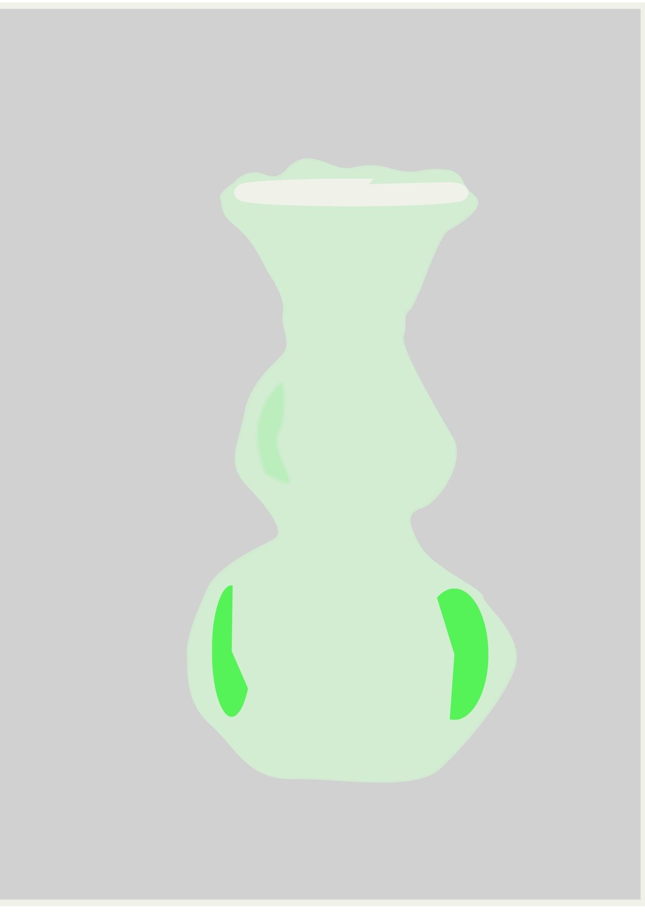
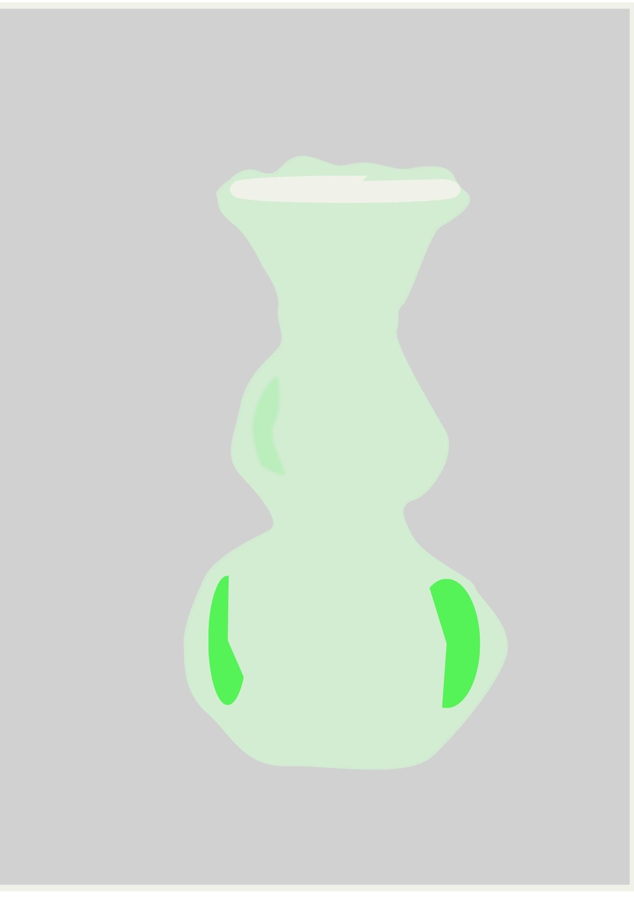

VEKTORSKA GRAFIKA
Vježbe (1–4)
1. VJEŽBA – FontForge
Izrada vlastitog fonta.
2. VJEŽBA – Bezierove krivulje
Crtanje inicijala pomoću Bezierovih krivulja.
3. VJEŽBA – Swatch i reflektiranje
Izrada cvijeta pomoću rotacije i reflektiranja.
4. VJEŽBA – Objekti i gradijenti
Spajanje i razdvajanje objekata uz korištenje gradijenata.
PRVI PROJEKTNI ZADATAK
Projektni zadatak u kojem smo primijenili znanja stečena iz vektorske grafike.
PIXEL GRAFIKA
Vježbe (5–7)
5. VJEŽBA – Retuširanje
Uklanjanje nepravilnosti sa fotografija.
6. VJEŽBA – Kolorizacija
Kolorizacija pomoću kanala.
7. VJEŽBA – Fotomontaža
Spajanje više fotografija u jednu realističnu kompoziciju.
DRUGI PROJEKTNI ZADATAK
Projektni zadatak izrađen kombiniranjem vlastitih i zadanih fotografija uz korištenje alata za selekciju i obradu slike.
VIDEO / WEB
Vježbe (8–11)
8. VJEŽBA – Kinemagraf
Animacija jednog elementa dok je ostatak slike statičan.
9. VJEŽBA – Video montaža
Osnove montaže i obrade videa.
10./11. VJEŽBA – Izrada web stranice
Osnove HTML-a i CSS-a.


 

.jpg)
.png)